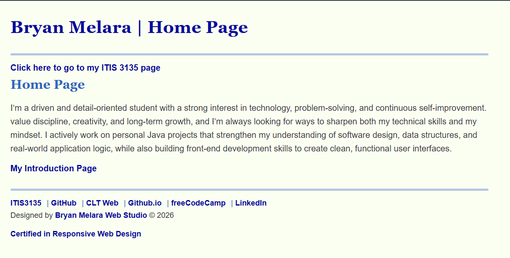

Peer Evaluation: Melara, Bryan

Website Checklist (CRAP)
- Contrast: The website has a clean and modern design with a consistent color scheme. The layout is intuitive, making it easy to navigate and doesn't cause too much eye strain.
- Repetition: The website avoids unnecessary repetition, ensuring that each section serves a unique purpose.
- Alignment: The content is well-organized and informative. It includes sections about Bryan's background, projects, and contact information.
- Proximity: There is little clutter, and elements are grouped logically. What really stands out is his studio-enterprise page and I can tell he did a stellar job!
Overall Impression
- Start: Fixing Warning Errors: A few significant warning errors found on his homepage, specifically about using more than one h1 on a webpage, a missing headshot image for his introduction.html page and several other pages on his main itis3135 site.
- Stop: The JS Warning Errors: There are a few JavaScript warning errors on his introduction form, primarily related to deprecated methods and potential performance issues of integrating it into his website.
- Continue: Debugging: Overall, Bryan's website is well-designed and effectively communicates his background and projects. With some adjustments to address the warning errors, it has the potential to be an excellent personal homepage.